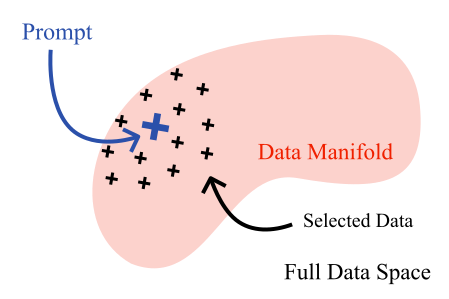
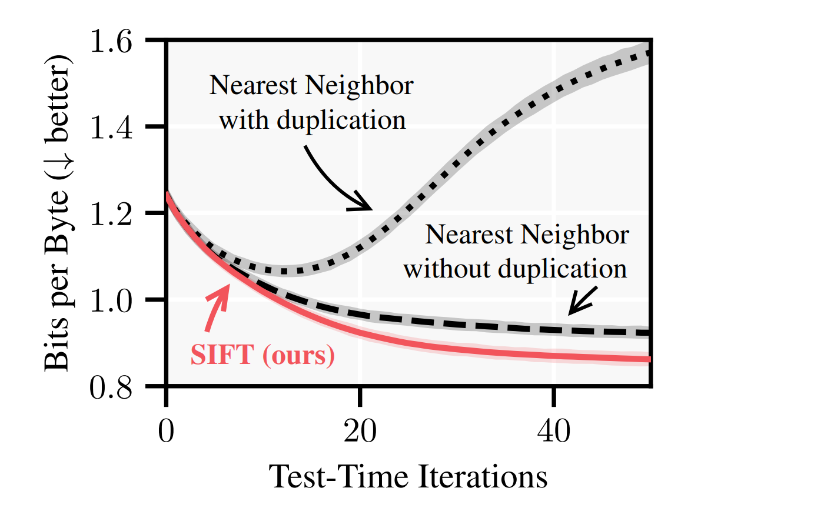
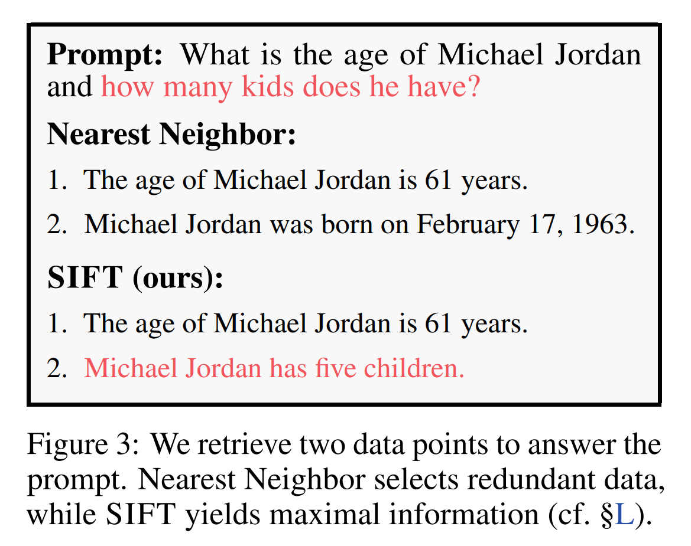

Overview
Large language models (LLMs) are typically trained once and then deployed without adapting to new information or user-specific data. This project investigates how LLMs can efficiently learn during inference by selectively fine-tuning themselves on informative examples encountered at test time.

Research Contribution
My contributions included developing components of the proposed active fine-tuning framework and conducting experiments to measure the performance.
Publication
This work was published at ICLR 2025.
-
Efficiently Learning at Test-Time: Active Fine-Tuning of LLMs
Authors: Jonas Hübotter, Sascha Bongni, Ido Hakimi, Andreas Krause
ICLR, 2025
View publication
Read the paper published at ICLR 2025.
Technologies
- Python
- PyTorch and Transformer-based language models
- Large Language Models (LLMs)
- Active Learning
Results
The project demonstrated that language models can improve their performance through targeted adaptation at test time, reducing the need for expensive full-scale retraining. The proposed active fine-tuning approach enables models to focus computational resources on the most informative examples, improving the efficiency of adaptation.

